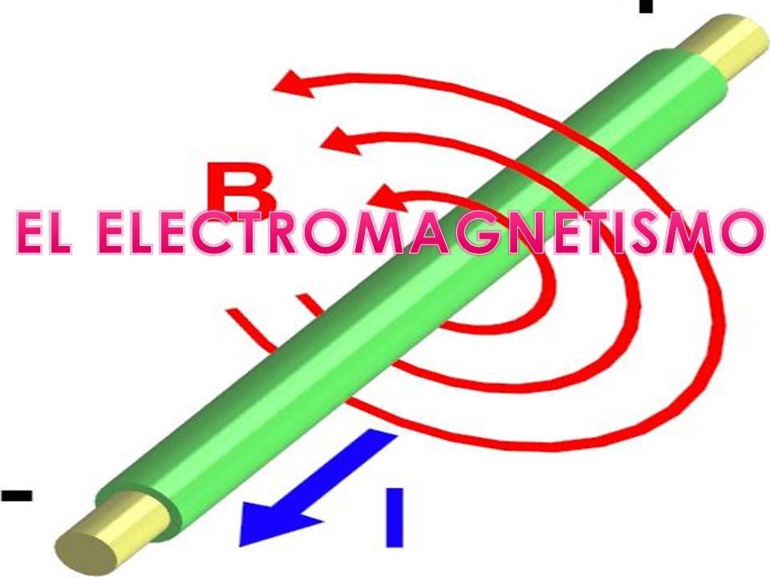
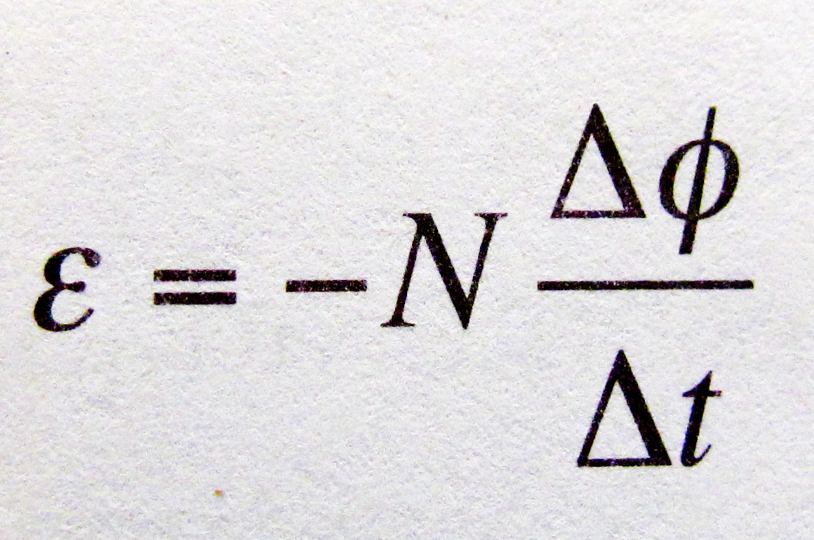
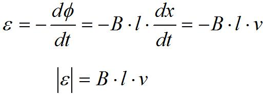

Bloque 2
2.1 Electromagnetismo
El electromagnetismo, estudia los fenómenos eléctricos y magnéticos que se unen en una sola teoría aportada por Faraday, que se resumen en cuatro ecuaciones vectoriales que relacionan campos eléctricos y magnéticos conocidas como las ecuaciones de Maxwell.
El Electromagnetismo, de esta manera es la parte de la Física que estudia los campos electromagnéticos y los campos eléctricos, sus interacciones con la materia y, en general, la electricidad y el magnetismo y las partículas subatómicas que generan flujo de carga eléctrica.
El electromagnetismo, por ende se comprende que estudia conjuntamente los fenómenos físicos en los cuales intervienen cargas eléctricas en reposo y en movimiento, así como los relativos a los campos magnéticos y a sus efectos sobre diversas sustancias sólidas, líquidas y gaseosas.

2.2 Leyes
2.2.1 Lenz
La ley de Lenz para el campo electromagnético relaciona cambios producidos en el campo eléctrico por un conductor con la propiedad de variar el flujo magnético, y afirma que las tensiones o voltajes aplicadas a un conductor, generan una F.E.M. (fuerza electro motriz) que se opone al paso de la corriente que la produce. Esta ley se llama así en honor del físico germano-báltico Heinrich Lenz, quien la formuló en el año 1834. En un contexto más general que el usado por Lenz, se conoce que dicha ley es una consecuencia más del principio de conservación de la energía aplicado a la conservación de la energía en presencia de campo electromagnético.
La polaridad de una tensión inducida es tal, que tiende a producir una corriente cuyo campo magnético se opone siempre a las variaciones del campo existente producido por la corriente original.
El flujo de un campo magnético uniforme a través de un circuito plano viene dado por:

2.2.2 Faraday
La ley de inducción electromagnética de Faraday (o simplemente ley de Faraday) establece que la tensión inducida en un circuitocerrado es directamente proporcional a la rapidez con que cambia en el tiempo el flujo magnético que atraviesa una superficie cualquiera con el circuito como borde.
